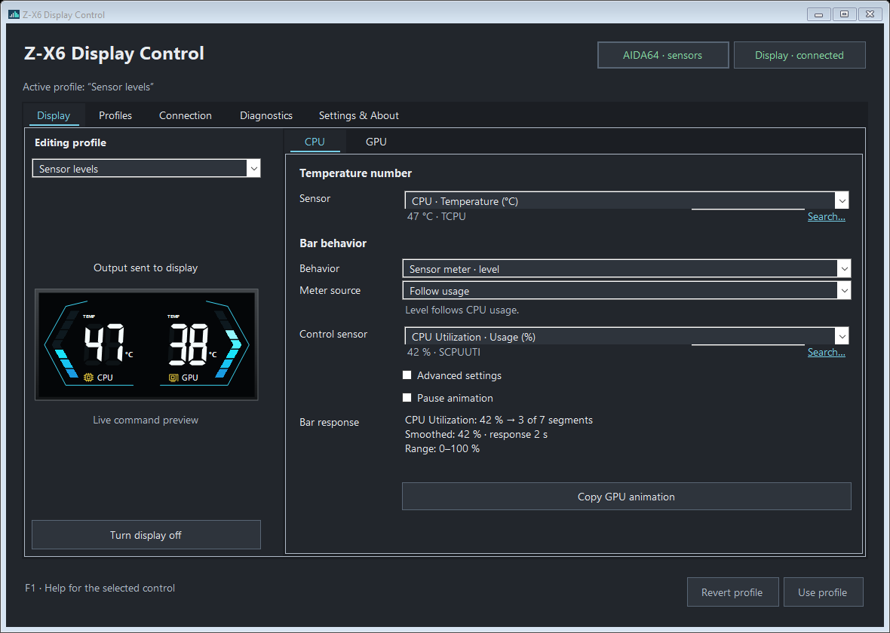

For the Z-X6 GPU holder
Choose what
your Z-X6 shows.
Choose which AIDA64 temperatures to display. Set how each bar moves, then save your settings as a profile.
0.1.0-beta.5Free · Portable · Open source
Requires AIDA64 and .NET Framework 4.7.2+.
Set the readings.
Adjust the movement.
Temperature and animation have separate controls for each side of the display.


- Choose the temperature you want to see
- Use the sensors AIDA64 exports, including GPU hotspot when available. The app previews the values and bar levels it sends to the holder.
- Let the bars follow your PC
- Let usage or temperature control the bar level or animation speed. Choose a steady effect or a repeating playlist, with separate settings for CPU and GPU.
- Keep a setup you like
- Start with one of eight built-in profiles. Your edits become a personal copy, so the originals stay intact. Export a profile to share it or keep a backup.
Once configured, leave the app in the Windows tray. Switch saved profiles or turn the display off from its menu. You can also choose to start with Windows.
Get it running on your Z-X6.
You’ll need one Z-X6 holder connected to a Windows PC, with AIDA64 running and shared-memory export enabled.
Extract the whole ZIP before opening the app. Disable AIDA64’s Turing LCD output and close any other utility using the holder. The app guides you through sensor selection.
Follow the setup guide0.1.0-beta.5 Public beta
Windows · .NET Framework 4.7.2+ · English UI
Download portable ZIPUnsigned executable. Other holder models and firmware variants have not been verified.
Release notes & checksums